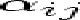
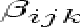
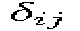
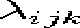

where n is the number of atoms. The force constants  and  correspond to the IMD parameters keating_alpha and keating_beta. keating_alpha has to be given in the same format as keating_d. For keating_beta, the index i takes on all values from 0 to n-1 while the other two indices are read in like the two-index parameters.
The IMD parameter keating_r_cut corresponds to a cutoff length for all pairs of atom types. It is used to determine the nearest neighbour atoms. The format of keating_r_cut is the same as for keating_d. The maximal number of nearest neighbours must be specified as a parameter with the IMD variable neigh_len. It is used to allocate memory for the neighbour tables.


| stiweb_a | Aij | |
| stiweb_b | Bij | |
| stiweb_p | pij | |
| stiweb_q | qij | |
| stiweb_de |  | |
| stiweb_a1 | a1ij | |
| stiweb_ga | | |
| stiweb_a2 | a2ij | |
| stiweb_la |  |
The values of the two-index parameters have to be given for all types of atoms in the following format:
where n is the number of atoms. In the case of stiweb_la, the first index takes on all values from 0 to n-1 while the last two indices are read in like the two-index parameters.
As a result of the short range nature of the potential, only the nearest neighbours have to be considered in the computation of the potential and the forces. The maximal number of nearest neighbours must be specified as a parameter with the IMD variable neigh_len. It is used to allocate memory for the neighbour tables.

The two-body potential is read in as an IMD potential table as usual using the IMD variable potfile. The cutoff function fc (r) has also to be given as a file in the same format as the potential table. The corresponding IMD variable is ttbp_potfile.
The parameter Z corresponds to the IMD variable ttbp_constant and the hybridization pertains to the variable ttbp_sp. The maximal number of nearest neighbours must be given with the IMD variable neigh_len.
In the present implementation, the following form of the Tersoff potential is used (J. Tersoff, Phys. Rev. B 39 (1989) 5566):


The IMD variables with the corresponding parameters are as follows:
| ters_a | Aij | |
| ters_b | Bij | |
| ters_la | | |
| ters_mu | | |
| ters_ga | | |
| ters_n | ni | |
| ters_c | ci | |
| ters_d | di | |
| ters_h | hi | |
| ters_r_cut | Sij | |
| ters_r0 | Rij | |
| ters_chi | |
|
| ters_om | |
The values of the single-index parameters have to be given for all atom types in a row. The values of the parameters ters_a, ters_b, ters_la, ters_mu, ters_r_cut and ters_r0 are read in using the following format:
where n is the number of atom types. In the case of the variables ters_chi and ters_om, the diagonal values of the matrix are equal to 1 and the non-diagonal values are read in using the following format:

The parameters ters_chi and ters_om are only required if there is more than one atom type.
As in the case of the Stillinger-Weber potential, the value of the variable neigh_len must also be specified.
It is possible to use a two-body potential in addition to the Tersoff potential. If the option pair is used, the potential is read in as an IMD potential table as usual using the IMD variable potfile. It is also possible to use some predefined pair potentials.